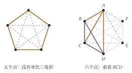

STEP I 1989，第 4 题
继续之前，请先阅读题目（原题为英文）。题目载于 STEP Support Programme 的题目资料库： step.maths.org/questions/89-s1-q4
引子
在任何一个六人派对上，要么有三个人彼此都认识，要么有三个人彼此都不认识。无论这六个人是谁，这一点都必定成立。换成五个人，就没有这个保证了。这个小小的事实是拉姆齐定理（Ramsey’s theorem）的第一个情形，它道出了一条贯穿现代组合数学（combinatorics）的原则：完全的无序是不可能的。任何足够大的结构，无论怎样着色或排列，都必定包含一个高度有序的部分。
证明只需四行。但顺理成章的下一个问题（要多少人才能保证有四个互相认识的人或四个互不认识的人？五个呢？）却通向数学中一些最困难的未解难题。
动笔之前
那六个点之所以重要，只在于哪些点对以哪种颜色相连：几何只会令人分心。一共有多少条线段？每个点又连出多少条？
一共有 \(\binom{6}{2} = 15\) 条线段，每个点连出 \(5\) 条。（一般位置（general position）这个条件只是确保任意三点都构成一个真正的三角形。这道题其实是关于六个顶点上的完全图（complete graph） \(K_6\)，它的边以两种颜色着色。）
逐步解题
阶段 1 五条线段，两种颜色
从 \(A\) 连出五条线段，每条不是金色就是银色。关于它们的颜色，你可以肯定甚么？
其中至少有三条颜色相同。假如金色的至多两条，银色的也至多两条，那么线段至多只有四条。这就是鸽巢原理（pigeonhole principle）：把五件物件放进两个盒子，必有一个盒子里至少有三件。不妨设（有需要时把两种颜色的名称对调）\(AB\)、\(AC\) 和 \(AD\) 全是金色。
阶段 2 看看另一端
现在看看三角形 \(BCD\)。如果它有任何一条边是金色，会怎样？如果一条都不是呢？
如果三角形 \(BCD\) 有任何一条边是金色，比如 \(BC\)，那么 \(ABC\) 的三条边 \(AB\)、\(AC\) 和 \(BC\) 全是金色。如果 \(BCD\) 没有一条边是金色，那么 \(BC\)、\(CD\) 和 \(DB\) 全是银色，\(BCD\) 就是一个银色三角形。无论哪种情况，都有一个单色三角形（图 9.2.1，右）。■
阶段 3 五个点并不足够
若只有五个点，每个点只连出四条线段。怎样着色，才能使每个点连出的线段恰好每种颜色各两条？
把五个点放成一个正五边形（如果想要它们处于一般位置，可以把它们稍微提离平面）。把五边形的五条边涂成金色，五条对角线涂成银色（图 9.2.1，左）。金色的边构成一个五圈，当中没有三角形；银色的边构成一个五角星，它同样是一个五圈，当中也没有三角形。所以并没有单色三角形。■

回顾
撇除无关的东西。空间中的点变成了一个着色的图；重要的只有边的颜色。
鸽巢原理。五条边、两种颜色，迫使其中三条同色。
对合适的对象分情况讨论。一旦找到三条金色的边，它们另一端的三角形就决定了一切。
紧确性（sharpness）。五边形的例子说明“六”这个数不能再降低。一条好的定理，总会附带一个例子，说明它已是最佳的结果。
背后的数学
拉姆齐数
拉姆齐数（Ramsey number） \(R(s, t)\) 是满足以下条件的最小的 \(N\)：把 \(K_N\) 的边以金、银两色着色，无论怎样着色，都必定包含一个金色的 \(K_s\)（即 \(s\) 个点，它们之间的所有边都是金色）或一个银色的 \(K_t\)。这道题已证明了 \(R(3, 3) = 6\)：六个点必定可行，而五边形说明五个点并不可行。
弗兰克·拉姆齐（Frank Ramsey）在 1928 年证明了这些数必定存在：对任意的 \(s\) 和 \(t\)，总有某个 \(N\) 符合要求。证明用的是归纳法（induction），把上面的论证加以推广，并得出 \(R(s, t) \leq R(s - 1, t) + R(s, t - 1)\)。但要找出确切的数值却异常困难： \[R(3, 3) = 6, \qquad R(4, 4) = 18, \qquad 43 \leq R(5, 5) \leq 46.\] \(R(4, 4)\) 的值是在 1955 年求得的。尽管已动用电脑作大规模搜索，\(R(5, 5)\) 至今仍然未知；上界 \(46\) 到 2024 年才获证明。电脑无法直接检查 \(K_{43}\) 的每一种着色：一共有 \(2^{903}\) 种，远远多于宇宙中原子的数目。
保罗·艾狄胥（Paul Erdős）对拉姆齐理论（Ramsey theory）发展的贡献无人能及，他很喜欢讲这个故事。假设外星人入侵地球，并威胁说除非我们告诉他们 \(R(5, 5)\) 的值，否则就毁灭地球。我们应当调动所有电脑和数学家，这样或许能把它找出来。但假如他们问的是 \(R(6, 6)\)，我们就应该设法消灭外星人。艾狄胥还在 1947 年证明了 \(R(k, k) > 2^{k/2}\)，所用的方法令人惊叹：他证明了，在少于 \(2^{k/2}\) 个点上随机着色的图，有正的概率不包含任何单色的 \(K_k\)，所以好的着色必定存在，尽管没有人知道怎样把它构造出来。这种概率方法（probabilistic method）如今是组合数学中最强大的工具之一。
乱中有序
拉姆齐定理有很多近亲，它们表达的都是同一个想法：足够大的结构无法避开秩序。范德瓦尔登定理（Van der Waerden’s theorem）说，如果把所有整数以有限种颜色着色，就存在任意长的单色等差数列（arithmetic progression）。艾狄胥–塞凯赖什定理（Erdős–Szekeres theorem）说，任何由 \(n^2 + 1\) 个相异的数组成的数列，都包含一个长度为 \(n + 1\) 的递增或递减子数列（subsequence）。而拉姆齐本人感兴趣的是一个逻辑问题：他是在一篇关于判定逻辑命题真假的论文中，把这条定理作为引理（lemma）来证明的。
思维技巧
如果把多于 \(kn\) 件物件放进 \(n\) 个盒子，则必有一个盒子里有多于 \(k\) 件物件。
这条原理显而易见，但要用得好却是一门艺术：功夫在于选定甚么是物件、甚么是盒子。在这道题中，物件是某一点上的五条边，盒子是两种颜色。在大学里，鸽巢原理的论证会出现在数论（以分数逼近无理数）、分析（波尔查诺–魏尔斯特拉斯定理（Bolzano–Weierstrass theorem））之中，更遍及整个组合数学。
延伸练习
至少两个。证明在 \(K_6\) 的任何双色着色中，其实至少有两个单色三角形。（提示：数一数“双色角”的数目，即在同一个顶点上的一对不同颜色的边。若一个点有 \(g\) 条金色的边和 \(5 - g\) 条银色的边，它就是 \(g(5 - g) \leq 6\) 个这样的角的顶点。每个非单色的三角形恰好包含两个这样的角。）
三种颜色。如果把 \(K_{17}\) 的边以三种颜色着色，证明其中有一个单色三角形。（提示：有一个点至少有六条同色的边。）
三或四。证明 \(R(3, 4) \leq 10\)：在 \(K_{10}\) 的任何金、银着色中，都有一个金色三角形或一个银色的 \(K_4\)。（提示：一个点要么至少有 \(4\) 条金色的边，要么至少有 \(6\) 条银色的边。）事实上 \(R(3, 4) = 9\)。
单调子数列。就 \(n = 2\) 的情形证明艾狄胥–塞凯赖什定理：任何由 \(5\) 个相异的数组成的数列，都包含一个长度为 \(3\) 的递增或递减子数列。找出一个由 \(4\) 个数组成、两者皆无的数列。
延伸阅读
Miklós Bóna, A Walk Through Combinatorics（World Scientific），组合数学入门书，可读其中关于鸽巢原理和拉姆齐理论的章节。
Ronald Graham & Joel Spencer,“Ramsey theory”，Scientific American（1990 年 7 月）。由两位顶尖研究者撰写的科普介绍。
Noga Alon & Joel Spencer, The Probabilistic Method（Wiley）。讲述艾狄胥这套方法的标准著作；第一章不难读懂。
Paul Hoffman, The Man Who Loved Only Numbers（Fourth Estate）。艾狄胥的传记。